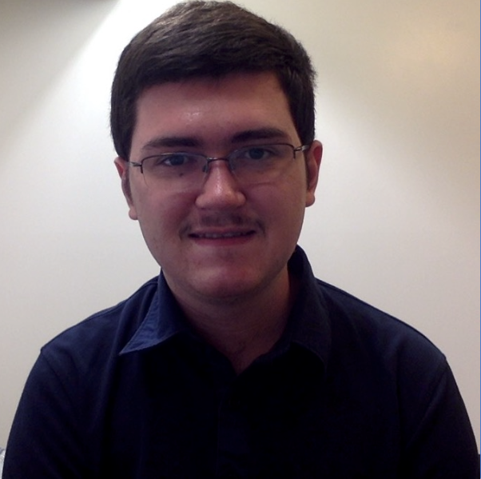
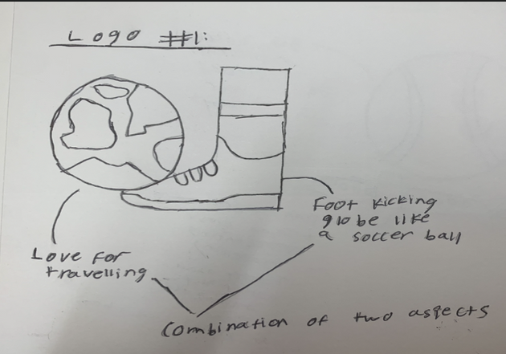
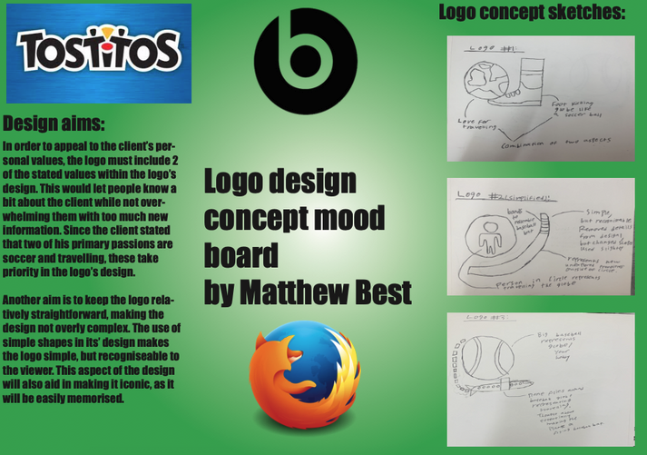
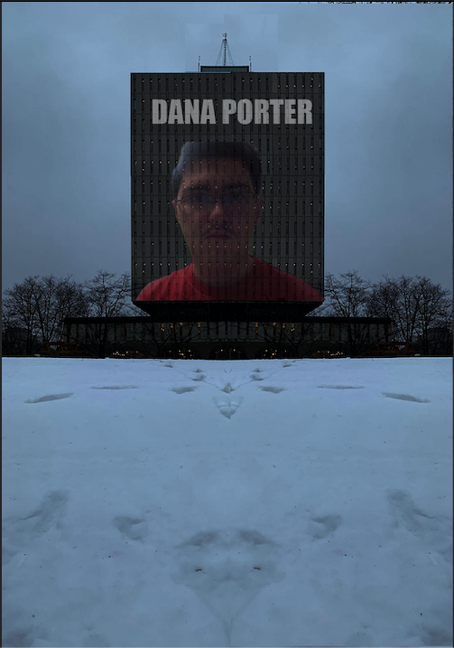
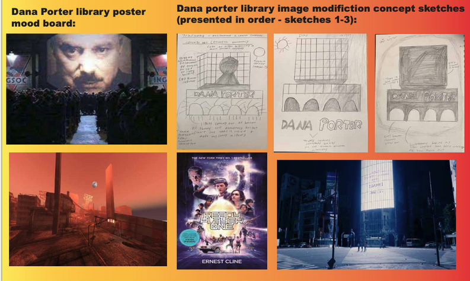
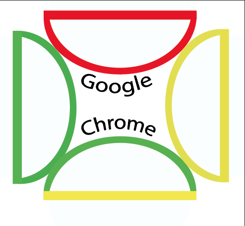
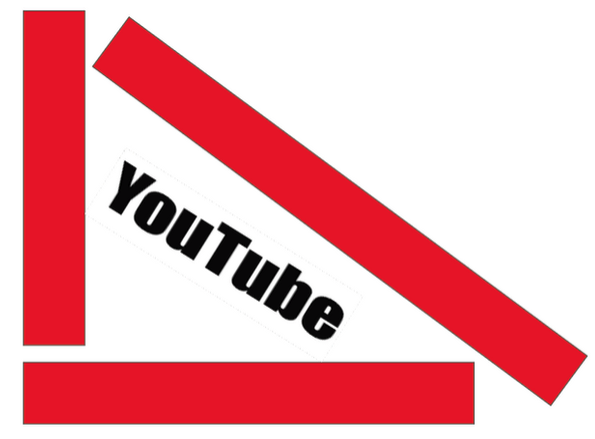
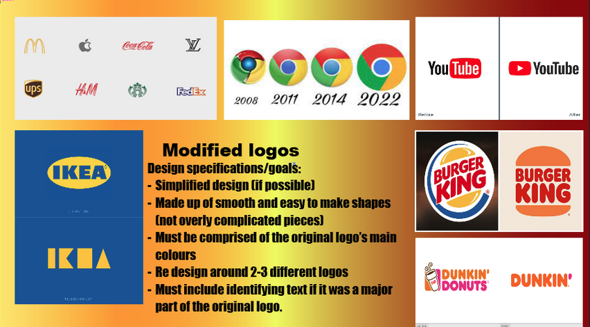
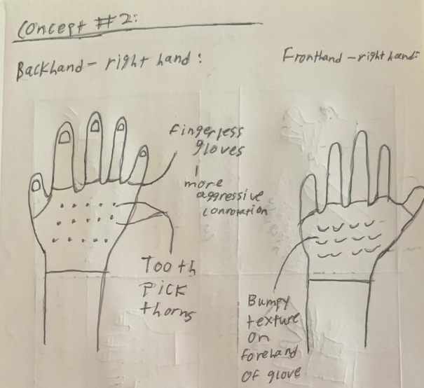

By clicking the button below, you can view a portion of my completed projects over the course of my Global Buisness and Digital Arts degree. Undergoing the creation of these projects involved exploring and learning how to use software such as Adobe Photoshop, Illustrator, and Adobe Premiere Pro. This was a big step and an intriguing learning experience for me, as I myself never previously used any industry-standard software prior to entering University.
End of section
Let Me Tell You About Myself.

About Me:
I have traveled internationally from Hong Kong to attend my studies at the University of Waterloo, as I wanted to see what it would be like to study abroad while taking part in a new culture. Upon discovering an interest in the marketing and product design aspect of my high school Design Technology class, it prompted me to pursue a degree in Global Business and Digital Arts. Having completed the IB Diploma program, I am a hard-working and determined person who is always open to trying new things, which prompts me to find a solution to any challenges I may face in my work.
End of section
My Portfolio:
Project #1 - Client Logo Design:
In this project, I was given a set of goals and visions by a randomly assigned client, next I designed a logo that reflected aspects of their personality. I initially created planning sketches of possible logos and explained my plans to my client. Following this step, the client provided their input, from which I created the final product.
This project was a good learning opportunity for me, as I had to learn how to fulfil the demands of a client within timed conditions while learning how to use the software Adobe Illustrator for the first time. I also learned the importance of setting specifications for which I could stick to throughout the design process. The final product was a sneaker next to a globe like a football, to represent their love for soccer and travelling the world in one logo.


Project #2 - Emotional Video:
In this project, I aimed to create a short silent video that could convey two given emotions to the viewer without any context, which were the emotions of "comfort" and "delight".
One of the ways in which I developed in terms of my video shooting, was that I constantly changed camera angles when filming each shot, so that I had a variety of options to choose from when deciding which shot looked best. During the editing process I needed to account for the exposure, shadows, and feel of the colors (warm or hot) that were being portrayed in each scene. The way I edited my video, played a big role in properly portraying the emotions I wanted to convey.
Project #3 - Themed Poster Design:
For this project, I designed two posters portraying a location under a given theme through Adobe Photoshop. The University’s Dana Porter Library had a unique architectural style, which gave off the feeling of a building within a sci-fi or dystopian fiction.
For the first poster I extended the building itself, while darkening the image to make it feel more sinister and imposing. I then put a slightly transparent picture of my face on the building, inspired by Big Brother from George Orwell’s 1984. In the second image, I was able to make the building and its’ surroundings darker to create a silhouette while putting a rust orange hue over the image to give it a post apocalyptic feel. A piece of feedback that was given, would be to use the rule of thirds to balance out the space used in my posters.


Project #4 - Logo Redesigns:
In this project, I took two different big and well-known brands and redesigned their logos in my own style. The logos I chose were Youtube and Google Chrome, as they are both apps that I commonly use in my day to day life. For each logo I sketched 2-3 potential designs I could choose from where I redesigned the classic logo by modifying specific elements of them in my own way. One of the main rules I aimed to stick to was keep the logos comprised of simple shapes while maintaining their primary colours. This would make the logos easily recognisable and iconic to the brands they are representing.



Project #5 - Emotional object:
In this project, I made modifications to an object to portray a given emotion. I was assigned the emotion ‘grumpy’ to portray through a winter glove. This project gave me an idea of what it would be like if I were to design an actual project for a client, as oftentimes clients can be quite open ended with their specifications. I built my entire design off of only one word, meaning that leaving a lot of room for my own creativity and innovation, which I was both excited by and challenged by in this project.
The final product consisted of an abrasive sponge on the forehand side of the glove and toothpicks sticking out of its back. This gave off the emotion grumpy, as it made it awkward for other people to interact with while giving off a slightly agitated feel.

Project #6 - Meal Planner App:
Working in a group of 6, I produced a functional high fidelity prototype of a working meal planner app. We brainstormed as a group, made an outline of specifications for our app, carried out user questionnaires, created low fidelity paper prototypes of our app, and lastly refined these ideas in order to create the final high fidelity prototypes.
We divided our group into two parts, where half worked on developing the desktop prototype and the other developed the mobile adaptation. This allowed us to ensure a more coherent and organised work flow. We also had to carry out two separate evaluations (a heuristic and final evaluation) in order to improve upon our initial high fidelity prototype as well as to evaluate the success of the final prototype.
Project #7 - Website design (Portfolio + class project):
I built two websites with my knowledge of HTML and CSS. One was a website informing the reader a bit about myself, including my goals, ambitions, and hobbies. The second is a portfolio website I decided to code from scratch (this website). Creating my initial biographical site was a challenging task, as I also needed to figure out how to properly implement aspects such as a functional grid system in order to make a responsive web page that wouldn’t break apart when I attempted to change the size of my web browser. Additionally this is the system most modern websites use to structure their content in a neat and tidy manner. Lastly, I considered how each individual element of the page would mix with other elements in order to fit in an aesthetically pleasing manner while considering styling elements such as background colour, padding, margins, and borders.